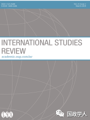

收录于合集

简 介
【作者】 Vincent Pouliot，麦吉尔大学教授，主要研究方向为国际关系。Thérien, Jean- Philippe，蒙特利尔大学政治学系终身教授，蒙特利尔大学国际和平与安全研究中心（CIPSS）主任。
** 【编译】** 姚寰宇
** ** ** 【校对】****** 徐枫潇
** ** ** ** ** 【审核】********** 王国欣
** 【 来源 】**
Pouliot, Vincent and Jean-Philippe The´rien Global Governance: A Struggle over Universal Values. International Studies Review (2018) 20, 55–73 2018, 55–73
** 【 ** ** 期刊** 】****
《国际研究评论》（International Studies Review）是是由牛津大学出版社代表国际研究学会（the International Studies Association）出版的同行评审学术期刊。该期刊每年出版四期，旨在为学者和学生就国际研究相关领域进行的对话和辩论提供平台，同时为相关人员提供新的研究方法和研究思路。

全球治理 ：一场关于普世价值的斗争
Global Governance: A Struggle over Universal Values
Pouliot, Vincent, and Jean-Philippe The´rien
内容提要
为什么在全球治理的过程中难以实现集体行动? 本文认为原因在于，世界舞台上充斥着关于“规范性的分野”（normative divisions），并尝试从全球价值斗争（global value struggle）的性质、范围和机制三个方面来进行论证。
首先，本文认为：在全球治理实践中，这些相互冲突的不同愿景（the distinct visions），是以普世价值的一种特殊表达方式呈现的，这种表达脱胎于对共同利益的多种概念争论。第二，本文强调当代全球治理争论中普世价值的普遍性。主张共同利益的理念（Contending notions of the common good）不仅受到非政府组织和国际组织等道德主体（moral agents）的支持，而且也受到国家的支持——而国家通常被认为是特定利益的先驱（harbingers）。更重要的是，普世价值不仅可以使统治合法化，也可以挑战现有的政策。最后，本文详述了全球价值斗争的机制，并进一步阐明全球事务的参与者需要使用普世价值来交流和证明其观点。总的来说，这篇文章有助于理解当代世界政治中的一种反直觉动态（a counterintuitive dynamic）：当试图将全球治理去政治化（depoliticize）时，普世价值实际上又最终使政治卷土重来——这是因为“普世价值总是为某些人和某种目的而存在”（universal values are always for someone and for some purpose）。
正 文
**1
** 全球治理中的价值观分歧
本文认为，在当今世界政治中，对共同利益（the general interest or the common good）的叙述构成了一种基本的话语结构（discursive structure）。全球政治参与者们常常因价值观不同而发生冲突。通过分析这些意识形态斗争的背后，本文试图更好地解释：为何在全球舞台上不同的行为体之间难以达成共识。
（一）普世价值的习语（ The Idiom of Universal Values）
“合法性”（the notion of legitimacy）为强调普世价值在全球治理中的重要性提供了良好的开端。在全球层面，关乎“合法性”的争论具有一个共同点：呼吁所谓的普世理想（universal ideals）。表面上看，政治行为体通过呼吁重视公共利益，为自己的立场和政策进行公开辩护并不稀奇，但当下缺少的是对普世价值习语的通行解释。
作者对相关文献进行了整理归纳，并指出在全球治理中， “合法性”（ legitimacy ）通常是以一种表达普遍愿望的修辞（ rhetoric of universal aspirations ）来寻求的 。所有发生的事情似乎都在表明，某一特定状况下的社会可接受性（social acceptability）不仅来自其实际行动（如：减轻贫困、通过公平规则进行治理等），而且主要来自其形式。普世价值语言通常能够包容一切，并能够凌驾在政治之上。
随后作者介绍了公共产品（public goods）视角下对全球治理的“管理式解读”（managerial understanding）。这种理解对当今政策和学术圈的影响很大，但也一直被诟病于剥夺了政治的规范性维度（the normative dimension of politics）。虽然公共产品的方法（the public goods approach）会强调问题的技术层面以及对有效解决方案的需求，但这也使得其容易忽略塑造决策过程的价值观争论。基于这一批判， 作者提出，全球治理始终包含着以集体理想为依据做出的选择，以及为这些选择所进行的辩护 。事实上，普世价值习语已经远远超出了学术的范畴，并进入了决策和实践的殿堂。 作者认为，要充实全球治理的规范性和政治性，最好的办法就是研究全球行为体关于普世价值观的竞争，同时让它们相互批驳 。
（二）普世价值的普遍性（ The Ubiquity of Universal Values）
普世价值在全球治理中几乎无处不在。在当前的多边外交中，共同利益引起了人们广泛的讨论，甚至在政治辩论中取代了其他形式的合法性。作者认为，除了非政府组织（NGOs）和国际组织（IOs）之外，那些惯常以自我为中心的国家也倾向于用更高尚的话语来表达自己的立场。在各国都在努力使自己在全球舞台上的地位合法化时，他们通常都会用普世价值习语来进行表述。
作者强调， 作为 “合法性”争论的一部分，提及普世价值习语的方式多种多样。同时普世价值既可以用来反对现有的权力结构，也可以用来使现有的权力结构合法化。这种语言已经成为了 当代全球治理的规范基础 （the normative infrastructure of contemporary global governance.）。如今全球各类行为体，不管其具体性质、起源、野心如何，都倾向于用普世价值来捍卫自己的立场。在全球政策之间发生冲突时，参与其中的各类行为体都试图通过呼吁共同理想（collective ideals）来凌驾于政治之上。这些理想被描绘成“国家利益优先”（preceding national interests）和“社会文化差异”（sociocultural differences），并借此，将特殊利益披上公共利益的外衣。
（三）全球价值观之争的机制（ The Mechanics of the Global Value Struggle）
作者首先给出价值观的定义：价值观是某一特定集体公开辩论的政治理想。 不同的普世价值融汇成不同的全球治理意识形态，通过这种世界观之间的冲突，全球治理的合法性（ global legitimacy ）得以产生、再生和竞争。
一方面全球对普世价值的争辩为辩论开辟了空间，并使得变革成为可能；另一方面，这也使得全球治理难以取得实质性的成果。作者并不否认在全球事务中达成妥协的可能，但这种妥协很少是基于真正的共识之上的。公共利益始终是全球治理代理竞争（global governance agents compete）的政治架构（political construct）。从这种意义上来说，普世价值的存在本身仍然是一个有待争论的问题。作为全球争论的焦点，共同利益的概念往往会产生一个有趣的悖论：在其试图将全球治理去政治化的过程中，普世价值观实际上最终将政治带回世界舞台。
**2
** 在联合国的价值观结构之争
联合国为理解全球治理提供了一个独特的视角。为了论证研究普世价值在全球治理中的作用， 本节中作者将全球公共政策（ global public policies ）作为分析对象 ，并例举有关联合国决策的两个典型案例:千年发展目标的通过（the adoption of the MDGs）和安理会的改革（the reform of the Security Council）——这两项公共政策都是联合国在后冷战时期的议程讨论中极为重要的项目。
（一）千年发展目标的通过（ Adopting the MDGs）
首先，作者简述千年发展目标的相关内容以及对其政策定位的各种分歧， 并指出这种分歧通常是以同一种普世价值的方式表达的 。随后作者分析了各行为体围绕发展的责任划分、减贫的价值等方面存在的分歧和争论， 得出结论：千年发展目标是两个主要的叙事结构围绕不同版本的普世价值观进行斗争的产物。这个斗争很大程度上是由南北的动态所决定的，并在日后成为可持续发展目标（ SDGs ）谈判的一个关键特征 。因此作者认为在未来几十年这仍将是全球治理的一个驱动力。
（二）安理会改革（ Reforming the Security Council）
作为一项全球公共政策，联合国安理会(UNSC)的改革一直在酝酿之中。从1992年开始，这场辩论几经波折，但迄今还未实现任何具体成果， 其面对的主要问题是：如何让不同提案 “合法化”和“失效”（ legitimize and delegitimize ） ——这些提案的范围从“新的常任理事国”到通过“废除否决权来更新任期”等均有涉及。
总的来说，有关安理会改革的争论主要来自于两套截然不同的普世价值观，而且他们的支持者之间是相互对立的——一类是要求安理会更加地有效率，另一类是支持安理会的民主化。 如何解决联合国系统高层的 “民主赤字”（ democracy deficit ），已经逐渐成为关于安理会现代化讨论中的主要矛盾。改革后的安理会，代表着新一轮的大国权力角逐，还是代表在不安全环境下生存的人的权益？ ——这种截然不同的立场势必会导致关于改革内容的重大分歧。如果最终安理会的改革取得成果，它将引导全球治理架构朝着某个规范的方向发展。
**3
** 结 论
将全球治理视为一场关于普世价值的斗争，不仅有助于理解其动态发展，还有助于认识其历史转型。进行公开辩论的集体愿望为全球的政治互动设定了条件，价值观在世界事务的演变中经常体现出更广泛的模式，而这与它们所传达的、往往带有偶然性的公共政策截然相反。意识形态的冲突常常体现历史变迁的方向，当我们准备应对当今的权力转移和世界舞台上新角色的崛起所带来的规范性后果（normative consequences）时，本文的观点为全球治理可能的未来提供了新的视角。
_ ** _ 本文由国政学人微信平台独家编译首发**
更多阅读
【重磅速递】约瑟夫·奈：美国霸权的兴衰：从威尔逊到特朗普 | 国政学人
【重磅推荐】巴里·布赞：英国学派视角下的中国崛起 | 国政学人
【重磅速递】米尔斯海默：注定失败：自由主义国际秩序的兴衰 | 国政学人
【国际组织】IO杂志：联合国维和行动的武力运用问题研究 | 国政学人
【国际秩序】为什么自由主义国际秩序理念将美国外交政策引入歧途？| 国政学人
【关系理论】“关系”：世界政治关系理论的中国话语 | 国政学人
【百年国关】历史在国际社会中的应用：从巴黎和会到现在 | 国政学人
【英国学派】张勇进：中国与全球国际社会中的自由主义等级制：实力与对规范变迁的协商 | 国政学人
【地区秩序】论经济实力的可转化性：中国经济崛起与东亚安全秩序 | 国政学人
【中俄关系】不得已的伙伴：系统-单元动态与中俄关系 | 国政学人
【IPE研究】美国对外贸易政策的“1934年体制”是如何形成的？ | 国政学人
【现实主义】斯蒂芬·沃尔特：傲慢的终结与美国克制的新时代 | 国政学人
【理论批判】系统、层次与结构理论：沃尔兹的理论并非系统理论 | 国政学人
【外交政策】单极体系下的不和平状态与美国外交政策 | 国政学人
【欧洲研究】资本主义多样性与合规：加入欧盟后中东欧的经济改革 | 国政学人